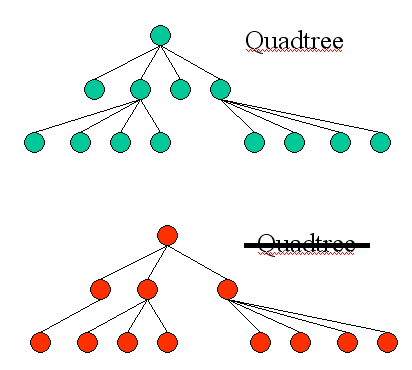
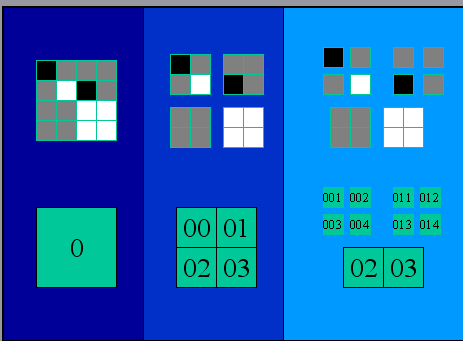
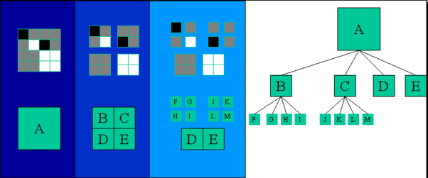
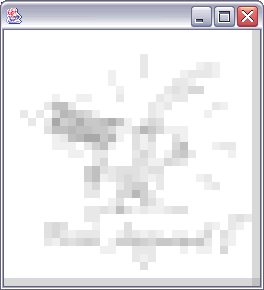

I recommend this assignment to

For this we will use so called Quadtrees, which sounds impressing but is nothing more than a tree where each node is either a leaf or has four children, see the example on the left. Top row: quadree, bottom row: not a quadtree.
Now imagine an image with no content, just being gray (e.g.: value = 100). We store each single pixel as 1 byte,
if the image's size is 256x256, we store 65536 times the value 100. Not very efficient.
A better way would be: if we know, that the image is unicolored, we just store that single color.
1 byte instead of 65536, sounds good. But usually we don't have unicolored images. The way out: we can observe,
that a lot of images have unicolored subareas.
How to do that ?
It's simple:
Check the image, if it's unicolored. If so, we're fine. If not:
Split the image into four quadrants (=4 subimages). Check each quadrant for being unicolored.
Do this recursively, until each region has the desired property.

Example: Recursive subdivision of multicolored areas into 4 sub-areas:
As you can guess by the example, the structure can be stored in a quadtree. The leaves will store the color
information of the unicolored areas. The example above would lead to a tree, that contains information about
area 0 in the node, the node's 4 children contain information about the areas 00,01,02,03 a.s.o.
(see figure below for the tree)
What is the information contained in the nodes ?
The better question would be: what do we need to reconstruct the original image from the tree ?
The leaves are the building blocks of the image: we reconstruct the image by drawing the
(rectangular) areas represented
by the leaves. An area is defined by
Of course we want to store the quadtree in a file. How to do that ?
Another question first: WHAT do we have to store ?
The answer:
If a node is a leaf, we need the color-information. Hence we store it.
If a node is not a leaf, there is no information to store, except that this node is not a leaf !
We can handle this easily:
Since the gray values (=color-information) are between 0 and 255, we can store a node not being a leaf by
the value 256 whereas all leaves are stored by their gray value, i.e. a value between 0..255 (never 256).
The structure of the tree will be given by the
order of the file: we store all nodes (i.e. the gray values or the '256') 'recursively from left to right'.
The example will explain what it means.

The figure shows the example above, the areas are re-labeled for simplicity. The tree on the right is the quadtree-representation of the image.
The tree in this example would be stored in the following order:
A (no leaf: recurse)
B (no leaf: recurse)
F
G
H
I
C (is the next sibling of B in depth 1, C is no leaf: recurse)
J
K
L
M
D
E
Resulting in the order: A,B,F,G,H,I,C,J,K,L,M,D,E
If we store the gray-values of the areas by this order, we get (black = 0, white = 255, gray = 100, 'no leaf' = 256):
256,256,0,100,100,255,256,100,100,0,100,100,255
The only information needed additionally is the initial size of the image. We want to deal with square images only, so it's ok to store the image's width only, before the actual data is written.
The fileformat:
The quadtree must be saved in a text-file, each row containing one
number only, starting with the size (which is
256 for the test image provided below.Don't be confused by this 256,
here it is a size, not the information 'no leaf'), followed by the
tree, as described above. Of course the order of the children is
important: child 0 (the first to be traversed by the recursion)
represents the upper left area, child 1
is the upper right area, child 2 the lower left, child 3 the lower
right one.
To check if the loader works, there is a file 'checkLoader.txt' containing a quadtree.
Typing 'java TreeCreator checkLoader.txt' should show you an image.
The image you have to convert to the quadtree is named 'FinalImage.txt'. It is a textfile, containing gray values of a 256x256 sized image, one value per pixel. The pixels are ordered rowwise from upper left to lower right corner. Each line of the textfile contains only one number.
So what do you finally have to do ?
Write a class, loading the 'FinalImage.txt' textfile into a 256x256 integer-array. Create a quadtree structure,
representing this array (see the example above). Save the quadtree as described as file 'MyFinalResult.txt'.
Check your result by loading it into my TreeCreator by 'java TreeCreator MyFinalResult.txt'.
That's it !
Remark:
The class TreeCreator can optionally be invoked with an additional parameter, specifying the tree depth which
is used for the image reconstruction. Values between 0 and 8 show interesting results (>8 is treated as 8).
Can you figure out what is done by this parameter ?
As an example i give you the result you should see by typing
'java TreeCreator MyFinalResult.txt 5':

The files you need:
JAVA FILE 1
JAVA FILE 2
JAVA FILE 3
The image-textfile you have to convert to a quad tree (320kB)
A quadtree-textfile to check the JAVA classes above (270kB)
Score: 0 points +5 bonus points (see first chapter for explanation)
This assignment is due to 5/5/03
Good luck !